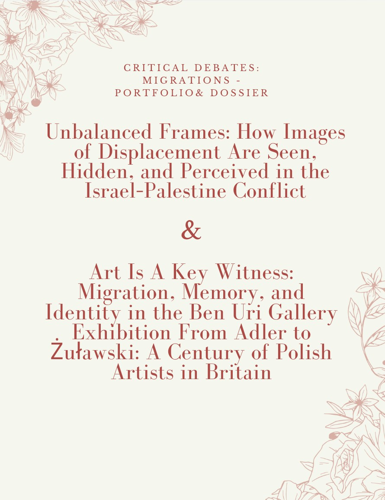

Migration in Art History
By: Madeline Heller
This page presents two compelling explorations of migration, each offering a distinct lens on the movement of people and the powerful art it inspires. Crafted as part of my MA History of Art project in 2026, these works reflect a deep personal and academic engagement with the subject. In developing these pieces, I adopted a comparative approach, employing visual analysis, archival research, and close reading of curatorial texts to examine the intersections between art, memory, and migration.
My analysis draws on postcolonial theory and memory studies to contextualize how artistic practices both represent and shape discourses around displacement. The first, “Unbalanced Frames: How Images of Displacement Are Seen, Hidden, and Perceived in the Israel-Palestine Conflict,” is a dossier that delves into the urgent and deeply complex visual narratives shaping perceptions and controversies. The second, “Art Is A Key Witness: Migration, Memory, and Identity in the Ben Uri Gallery Exhibition From Adler to Żuławski: A Century of Polish Artists in Britain,” is a vivid exhibition review capturing the emotional resonance and historical significance of the Ben Uri Gallery’s tribute. Together, these pieces aim to illuminate how, through the lens of art, migration becomes both a record of trauma and a testament to resilience, memory, and cultural identity.

Unbalanced Frames
How Images of Displacement Are Seen, Hidden, and Perceived in the Israel-Palestine Conflict
Read the dossier (PDF)Art Is A Key Witness
Migration, Memory, and Identity in the Ben Uri Gallery exhibition, “From Adler to Żuławski: A Century of Polish Artists in Britain”
Read the review (PDF)